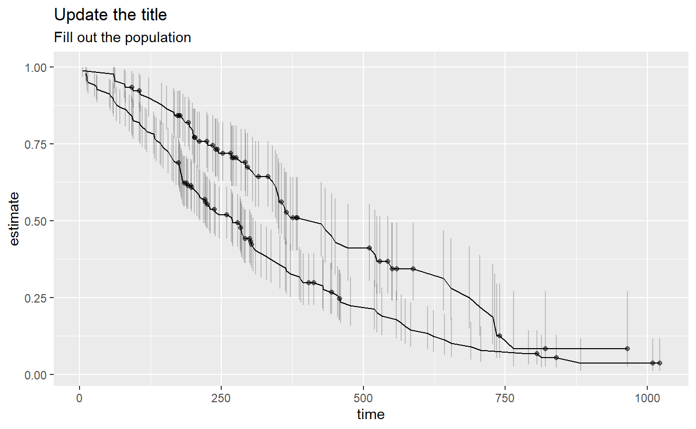
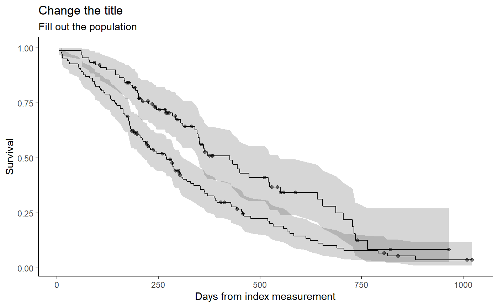
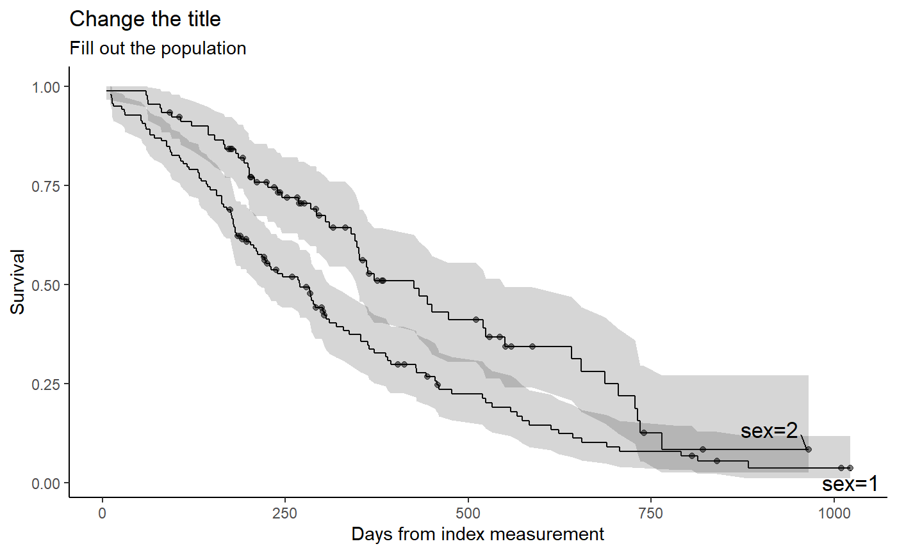

plot_survival.Rmdlibrary(survival)
library(magrittr)
library(dplyr)
#>
#> Attaching package: 'dplyr'
#> The following objects are masked from 'package:stats':
#>
#> filter, lag
#> The following objects are masked from 'package:base':
#>
#> intersect, setdiff, setequal, union
library(ggplot2)
library(broom)
library(patchwork)
fit <- survfit(Surv(time, status) ~ sex, data = lung)
a <- fit %>%
tidy() %>%
visr_plot_surv()
a
Display risk table


TODO: How to add to displayed ggplot object. ggproto? e.g. add facetting by strata.